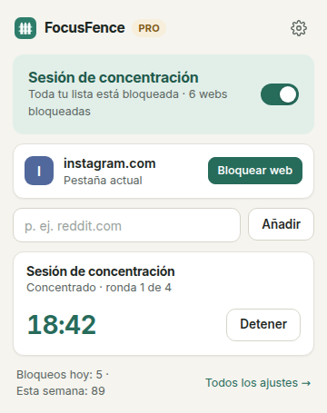
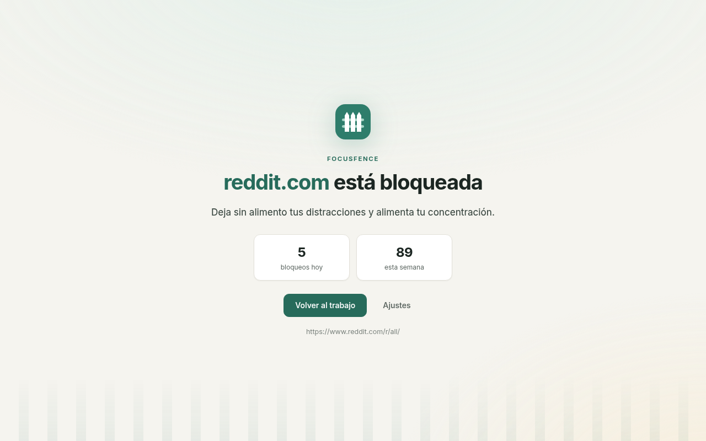
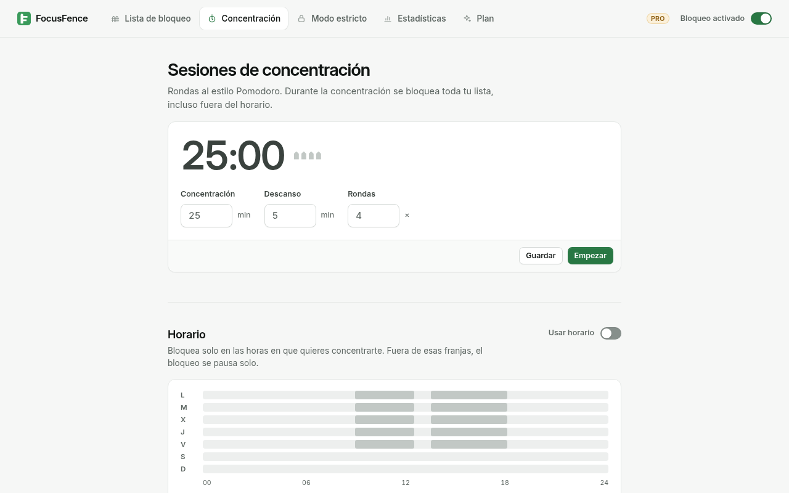
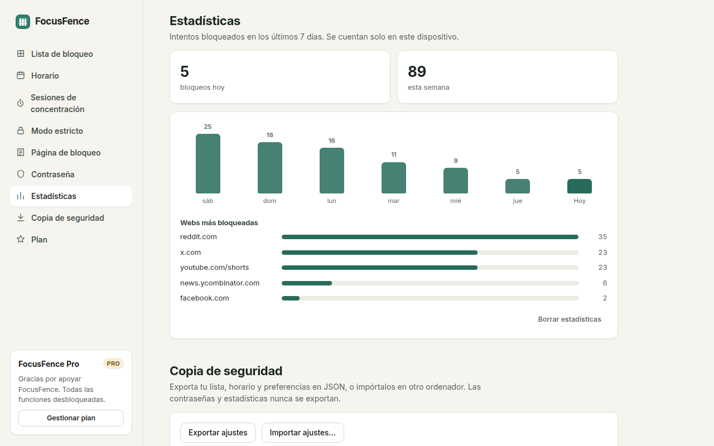

Bloqueador de webs para Chrome
Ponle una valla a los feeds infinitos.
FocusFence bloquea con un clic las webs que te roban la atención. Bloquea todo Reddit o solo los Shorts de YouTube. Fija tus horas de concentración. Cuando falle la fuerza de voluntad, activa el modo estricto.
Gratis para siempre con webs ilimitadas · Sin cuenta · Sin rastreo


Todo lo que necesitas para concentrarte. Nada que sobre.
Bloquea una web con un clic
Abre la ventana y pulsa Bloquear web. Bloquear reddit.com también bloquea old.reddit.com, m.reddit.com y cualquier otro subdominio.
Bloquea solo la parte mala PRO
Bloquea youtube.com/shorts y conserva el resto de YouTube para tutoriales y charlas. También se bloquean los Shorts que abras desde dentro de YouTube. Las reglas por palabra clave bloquean cualquier dirección que contenga una palabra.
Horarios PRO
Bloquea solo en tu horario de trabajo, los días que elijas. También funcionan los tramos nocturnos, p. ej. 22:00–06:00 para dormir mejor.
Sesiones Pomodoro PRO
Rondas de concentración y descansos cronometrados. Toda tu lista queda bloqueada mientras te concentras. La cuenta atrás aparece en el icono de la barra de herramientas.
Modo estricto PRO
Con el modo estricto activo, no se puede desactivar el bloqueo ni quitar webs. Para terminarlo antes hay que esperar 10 minutos y superar un reto de escritura.
Estadísticas, contraseña y más PRO
Consulta los intentos bloqueados por web y por día. Protege los ajustes con contraseña, escribe tu propio mensaje de bloqueo y exporta o importa tu configuración.


Tus datos se quedan en tu dispositivo
Tu lista, tus ajustes y tus estadísticas se guardan en el almacenamiento local de Chrome. Sin cuenta, sin analíticas, sin anuncios.
FocusFence no lee tus páginas
El bloqueo usa el motor de reglas integrado en Chrome (declarativeNetRequest). FocusFence nunca ve el contenido de las páginas que visitas.
Permisos mínimos
FocusFence pide acceso web a web, solo para las webs que bloqueas. Si dices que no, la web sigue bloqueada.
Precios sencillos
Gratis
- Webs bloqueadas ilimitadas
- Subdominios incluidos
- Bloqueo con un clic desde la ventana
- Interruptor de encendido/apagado
- Página de bloqueo tranquila
Pro mensual
- Todo lo del plan Gratis
- Horarios
- Bloqueo por ruta y palabra clave
- Sesiones Pomodoro
- Modo estricto
- Contraseña, estadísticas, mensaje propio, copia de seguridad
Pro anual Ahorra un 44 %
- Todo lo de Pro mensual
- 12 meses por menos de lo que cuestan 7
Pagos procesados por ExtensionPay (Stripe). Precios en dólares estadounidenses.
Preguntas
¿Puedo bloquear los Shorts de YouTube y seguir usando YouTube?
Sí, con Pro. Añade youtube.com/shorts como regla de ruta. youtube.com, los vídeos y la búsqueda siguen funcionando. Se bloquean los enlaces a Shorts y la navegación a Shorts dentro de YouTube.
¿Bloquear reddit.com también bloquea old.reddit.com?
Sí. Una regla de dominio cubre todos los subdominios, en Gratis y en Pro.
¿Por qué Chrome pide permiso cuando añado una web?
Chrome solo deja que una extensión muestre su propia página de bloqueo en las webs a las que tiene acceso. FocusFence pide acceso solo a esa web. Si lo rechazas, la web sigue bloqueada, pero verás la página de error de Chrome en lugar de la página de FocusFence.
¿Se puede saltar el modo estricto?
Respuesta sincera: Chrome siempre permite desactivar o quitar una extensión, y FocusFence no puede bloquear la página de extensiones. Una sesión estricta con tiempo se pausa mientras FocusFence está desactivado, así que su tiempo no corre en segundo plano. Las ventanas de incógnito solo se cubren si permites FocusFence en incógnito, y FocusFence te avisa si no lo has hecho. Otros navegadores y dispositivos no están cubiertos.
¿Qué datos recogéis?
Ninguno. Consulta la política de privacidad. El único tráfico de red es ExtensionPay comprobando tu licencia, y solo después de que decidas pasarte a Pro.
¿FocusFence es de código abierto?
Sí, bajo la licencia GNU AGPL v3. Lee el código.